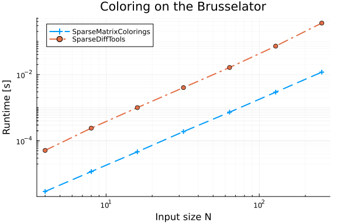
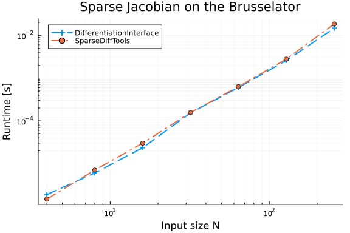
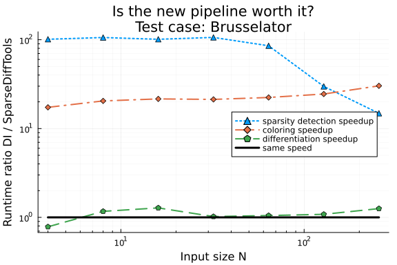

Brusselator sparse AD benchmarks
using ADTypes
using LinearAlgebra, SparseArrays
using BenchmarkTools, DataFrames
import DifferentiationInterface as DI
using Plots
import SparseDiffTools as SDT
using SparseConnectivityTracer: TracerSparsityDetector
using SparseMatrixColorings: GreedyColoringAlgorithm
using Symbolics: SymbolicsSparsityDetector
using TestDefinitions
brusselator_f(x, y, t) = (((x - 0.3)^2 + (y - 0.6)^2) <= 0.1^2) * (t >= 1.1) * 5.0
limit(a, N) =
if a == N + 1
1
elseif a == 0
N
else
a
end;
function brusselator_2d!(du, u)
t = 0.0
N = size(u, 1)
xyd = range(0; stop=1, length=N)
p = (3.4, 1.0, 10.0, step(xyd))
A, B, alpha, dx = p
alpha = alpha / dx^2
@inbounds for I in CartesianIndices((N, N))
i, j = Tuple(I)
x, y = xyd[I[1]], xyd[I[2]]
ip1, im1, jp1, jm1 = limit(i + 1, N),
limit(i - 1, N), limit(j + 1, N),
limit(j - 1, N)
du[i, j, 1] =
alpha *
(u[im1, j, 1] + u[ip1, j, 1] + u[i, jp1, 1] + u[i, jm1, 1] - 4u[i, j, 1]) +
B +
u[i, j, 1]^2 * u[i, j, 2] - (A + 1) * u[i, j, 1] + brusselator_f(x, y, t)
du[i, j, 2] =
alpha *
(u[im1, j, 2] + u[ip1, j, 2] + u[i, jp1, 2] + u[i, jm1, 2] - 4u[i, j, 2]) +
A * u[i, j, 1] - u[i, j, 1]^2 * u[i, j, 2]
end
end;
function init_brusselator_2d(N::Integer)
xyd = range(0; stop=1, length=N)
N = length(xyd)
u = zeros(N, N, 2)
for I in CartesianIndices((N, N))
x = xyd[I[1]]
y = xyd[I[2]]
u[I, 1] = 22 * (y * (1 - y))^(3 / 2)
u[I, 2] = 27 * (x * (1 - x))^(3 / 2)
end
return u
end;Correctness
x0_32 = init_brusselator_2d(32);Sparsity detection
S1 = ADTypes.jacobian_sparsity(
brusselator_2d!, similar(x0_32), x0_32, TracerSparsityDetector()
)
S2 = ADTypes.jacobian_sparsity(
brusselator_2d!, similar(x0_32), x0_32, SymbolicsSparsityDetector()
)
@test S1 == S2Test PassedColoring
c1 = ADTypes.column_coloring(S1, GreedyColoringAlgorithm())
c2 = SDT.matrix_colors(S1)
@test c1 == c2Test PassedDifferentiation
backend = AutoSparse(
AutoForwardDiff();
sparsity_detector=TracerSparsityDetector(),
coloring_algorithm=GreedyColoringAlgorithm(),
);
extras = DI.prepare_jacobian(brusselator_2d!, similar(x0_32), backend, x0_32);
J1 = DI.jacobian!(
brusselator_2d!, similar(x0_32), similar(S1, eltype(x0_32)), extras, backend, x0_32
)
cache = SDT.sparse_jacobian_cache(
backend,
SDT.JacPrototypeSparsityDetection(; jac_prototype=S1),
brusselator_2d!,
similar(x0_32),
x0_32,
);
J2 = SDT.sparse_jacobian!(
similar(S1, eltype(x0_32)), backend, cache, brusselator_2d!, similar(x0_32), x0_32
)
@test J1 == J2Test PassedBenchmarks
N_values = 2 .^ (2:8)7-element Vector{Int64}:
4
8
16
32
64
128
256Sparsity detection
td1, td2 = zeros(length(N_values)), zeros(length(N_values))
for (i, N) in enumerate(N_values)
@info "Benchmarking sparsity detection: N=$N"
x0 = init_brusselator_2d(N)
td1[i] = @belapsed ADTypes.jacobian_sparsity(
$brusselator_2d!, $(similar(x0)), $x0, TracerSparsityDetector()
)
td2[i] = @belapsed ADTypes.jacobian_sparsity(
$brusselator_2d!, $(similar(x0)), $x0, SymbolicsSparsityDetector()
)
end
let
pld = plot(;
title="Sparsity detection on the Brusselator",
xlabel="Input size N",
ylabel="Runtime [s]",
)
plot!(
pld,
N_values,
td1;
lw=2,
linestyle=:auto,
markershape=:auto,
label="SparseConnectivityTracer",
)
plot!(pld, N_values, td2; lw=2, linestyle=:auto, markershape=:auto, label="Symbolics")
plot!(pld; xscale=:log10, yscale=:log10, legend=:topleft, minorgrid=true)
pld
endColoring
tc1, tc2 = zeros(length(N_values)), zeros(length(N_values))
for (i, N) in enumerate(N_values)
@info "Benchmarking coloring: N=$N"
x0 = init_brusselator_2d(N)
S = ADTypes.jacobian_sparsity(
brusselator_2d!, similar(x0), x0, TracerSparsityDetector()
)
tc1[i] = @belapsed ADTypes.column_coloring($S, GreedyColoringAlgorithm())
tc2[i] = @belapsed SDT.matrix_colors($S)
end
let
plc = plot(;
title="Coloring on the Brusselator", xlabel="Input size N", ylabel="Runtime [s]"
)
plot!(
plc,
N_values,
tc1;
lw=2,
linestyle=:auto,
markershape=:auto,
label="SparseMatrixColorings",
)
plot!(plc, N_values, tc2; lw=2, linestyle=:auto, markershape=:auto, label="SparseDiffTools")
plot!(plc; xscale=:log10, yscale=:log10, legend=:topleft, minorgrid=true)
plc
end
Differentiation
tj1, tj2 = zeros(length(N_values)), zeros(length(N_values))
for (i, N) in enumerate(N_values)
@info "Benchmarking differentiation: N=$N"
x0 = init_brusselator_2d(N)
S = ADTypes.jacobian_sparsity(
brusselator_2d!, similar(x0), x0, TracerSparsityDetector()
)
J = similar(S, eltype(x0))
tj1[i] = @belapsed DI.jacobian!($brusselator_2d!, _y, _J, _prep, $backend, $x0) setup = (
_y = similar($x0);
_J = similar($J);
_prep = DI.prepare_jacobian($brusselator_2d!, similar($x0), $backend, $x0)
) evals = 1
tj2[i] = @belapsed SDT.sparse_jacobian!(_J, $backend, _cache, $brusselator_2d!, _y, $x0) setup = (
_y = similar($x0);
_J = similar($J);
_cache = SDT.sparse_jacobian_cache(
$backend,
SDT.JacPrototypeSparsityDetection(; jac_prototype=$S),
$brusselator_2d!,
similar($x0),
$x0,
)
) evals = 1
end
let
plj = plot(;
title="Sparse Jacobian on the Brusselator", xlabel="Input size N", ylabel="Runtime [s]"
)
plot!(
plj,
N_values,
tj1;
lw=2,
linestyle=:auto,
markershape=:auto,
label="DifferentiationInterface",
)
plot!(plj, N_values, tj2; lw=2, linestyle=:auto, markershape=:auto, label="SparseDiffTools")
plot!(plj; xscale=:log10, yscale=:log10, legend=:topleft, minorgrid=true)
plj
end
Summary
let
pl = plot(;
title="Is the new pipeline worth it?\nTest case: Brusselator",
xlabel="Input size N",
ylabel="Runtime ratio DI / SparseDiffTools",
)
plot!(
pl,
N_values,
td2 ./ td1;
lw=2,
linestyle=:dot,
markershape=:utriangle,
label="sparsity detection speedup",
)
plot!(
pl,
N_values,
tc2 ./ tc1;
lw=2,
linestyle=:dashdot,
markershape=:diamond,
label="coloring speedup",
)
plot!(
pl,
N_values,
tj2 ./ tj1;
lw=2,
linestyle=:dash,
markershape=:pentagon,
label="differentiation speedup",
)
plot!(pl, N_values, ones(length(N_values)); lw=3, color=:black, label="same speed")
plot!(pl; xscale=:log10, yscale=:log10, minorgrid=true, legend=:right)
pl
end